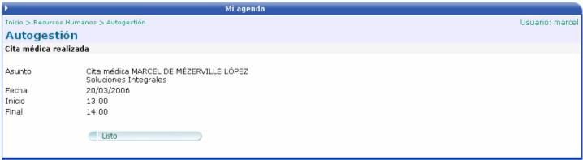
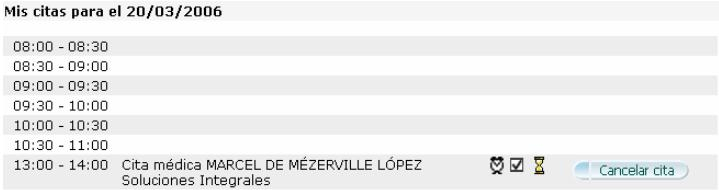
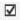

Aquí se le muestra al usuario una especie
de agenda, donde podrá programar sus citas médicas. Solamente tendrá que
seleccionar la fecha de la cita, en el calendario ubicado al lado derecho
de la pantalla y presionar el botón  para continuar con
el siguiente paso que corresponde a la selección de la hora.
para continuar con
el siguiente paso que corresponde a la selección de la hora.
Esta funcionalidad permite en caso que el módulo de Expediente médico este activado solicitar visitas al médico de empresa, considerándose desde la creación de las citas por parte del empleado los cupos o espacios disponibles para atención de parte del médico de empresa.

Luego de haber seleccionado el día y de presionar el botón de Nueva Cita, se debe de seleccionar un horario. Las opciones de horario iniciarán con el rango más próximo a la hora actual del sistema, como lo muestra la siguiente pantalla:

La definición de horas o rangos de horas que se muestra en el módulo dependerá de la política de la empresa y tiempos estimados de atención definidos al momento de crearse la agenda del médico de empresa.
Una vez seleccionado el horario deseado
se presiona el botón  y la cita quedará programada.
y la cita quedará programada.

Al presionar el botón , el sistema lo devolverá a la pantalla inicial para mostrarle la información de la cita.
Un aspecto importante a mencionar es que el sistema tiene la capacidad de recordar las citas ingresas al sistema por cada empleado mediante el envío de correos electrónicos, cierto tiempo antes de la cita.
Si el usuario desea cancelar la cita, solamente
debe de presionar el botón  y el sistema anulará la cita
automáticamente.
y el sistema anulará la cita
automáticamente.

Es importante mencionarse que las citas se crean en el sistema pero quedan firmes únicamente en el momento en que sean aprobadas por el médico de empresa, en cuyo caso se activa el siguiente indicador de cita autorizada
